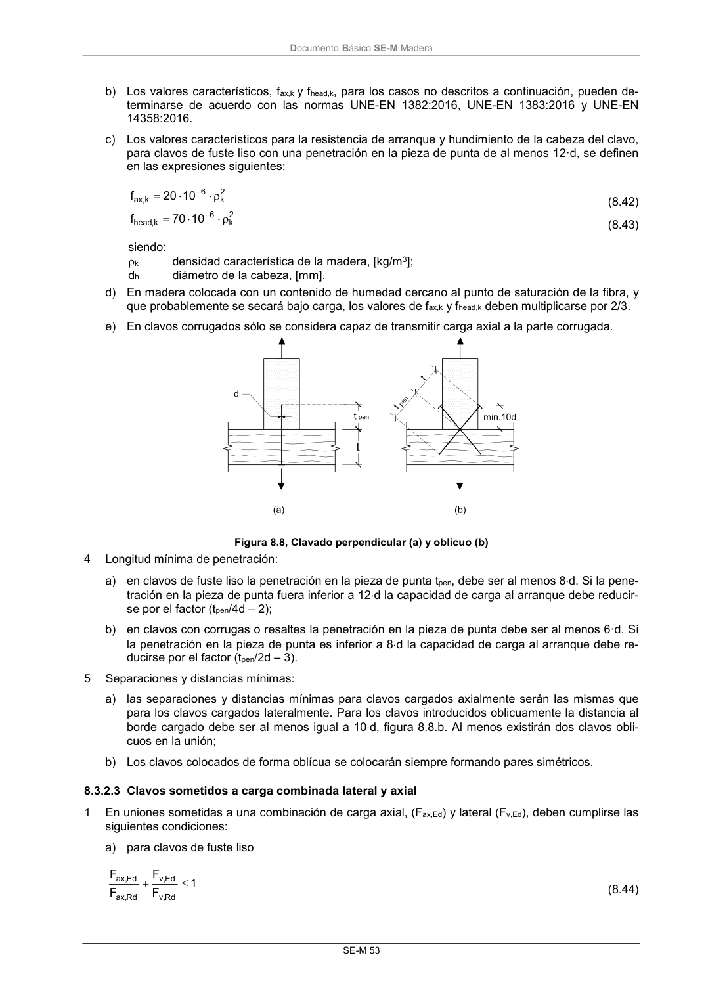

DB-SE-M Madera · edición 2019-12-20 · capa oficial
Documento DB-SE-M-oficial · SHA-256 del PDF 26b5819839ebfda78b0b119c5e76a0a37773b0d763c05688541870075df93718
Copia fiel del PDF fuente · Fuente oficial
Ficha de la disposición en la fuente oficial
Formatos: JSON del segmento · Markdown
8.3.2.3 Clavos sometidos a carga combinada lateral y axial 1 En uniones sometidas a una combinación de carga axial, (Fax,Ed) y lateral (Fv,Ed), deben cumplirse las siguientes condiciones: a) para clavos de fuste liso 1 F F F F Rd ,v Ed ,v Rd , ax Ed , ax (8.44) DocumentoBásico SE-M Madera SE-M 54 b) para clavos que no sean de fuste liso (como se definen en la norma UNE-EN 14592:2009+A1:2012): 1 F F F F 2 Rd ,v Ed ,v 2 Rd , ax Ed , ax (8.45) siendo: Fax,Ed y Fv,Ed capacidades de cálculo de la unión cargada con esfuerzo axial o lateral de forma in- dependiente.
